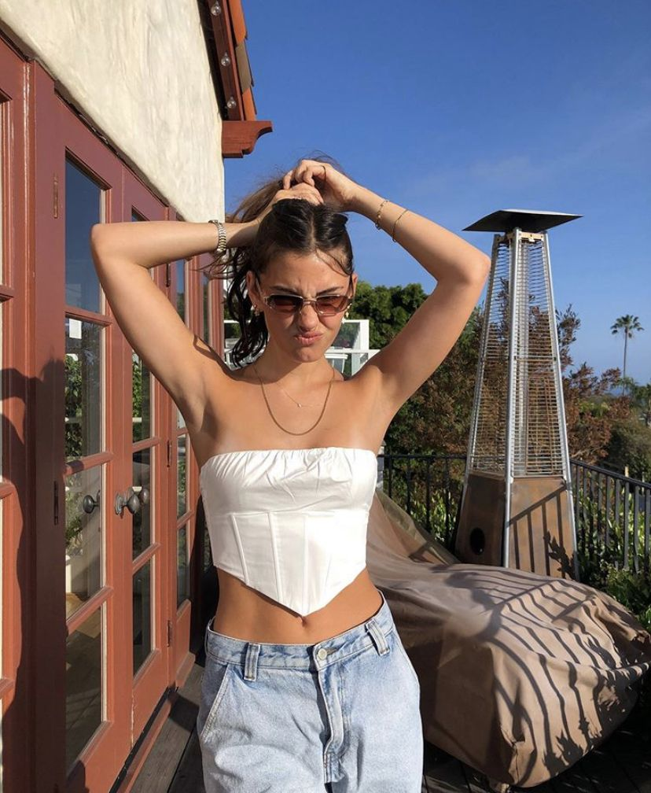
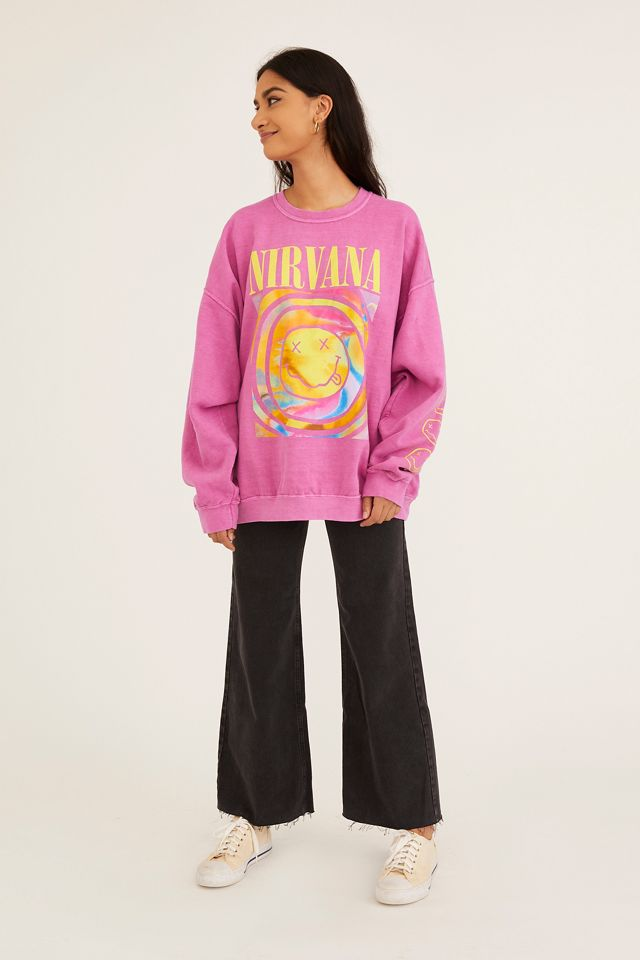
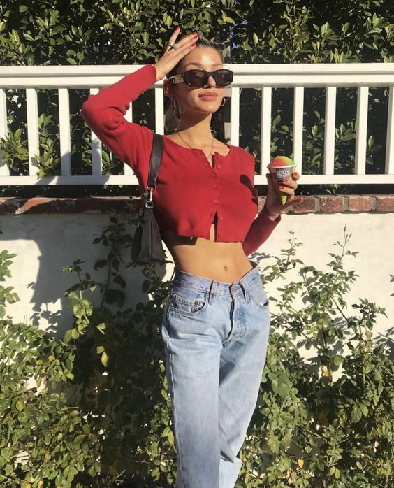

Current
Corset tops became popular around 2020, and have sense evolved into the more simplistic 'bustier' style. Baggy, low rise jeans have also become trendy again.
Y2K fashion has been especially in this year. The top shown below protrays a number of different trends that originated from the early 2000's: cheetah print, bright colors, and graphics.
Oversized clothing has also been in for a while. The sweatshirt above, from Urban Outfitters, is made purposely look a few sizes too large.
Chunky jewelry is also in, and can give any outfit an edge.
When going for a more simple, comfortable look, low rise jeans and a cardigan is the way to go. Adding a pair of chunky sunglasses and mini shoulder bag.
